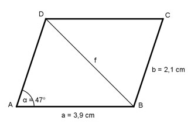

Aufgabe 142 Berechnen Sie die Länge der Diagonalen f, wenn a = 3,9 cm, b = 2,1 cm und α = 47°.

Fall SSS. Cosinussatz: f2 = a2 + b2 - 2 * a * b * cos α f2 = 3,92 + 2,12 - 2 * 3,9 * 2,1 * cos 47° f2 = 3,92 + 2,12 - 2 * 3,9 * 2,1 * 0,682 f2 = 8,4 cm2 | √ f = 2,9 cm